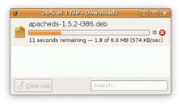
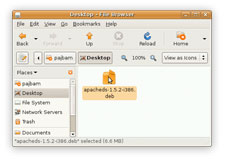
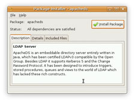
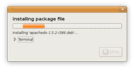

ApacheDS 2.0
Downloads
Documentation
- Basic User Guide
- Advanced User Guide
- Developer Guide
- Kerberos User Guide
- Configuration
- JavaDocs
- Cross-Reference
Support
Community
About Apache
Downloads for Linux Debian Package
[if-any logo]
[end]
We suggest the following mirror site for your download:
Linux Debian Package 64 bit
Linux Debian Package 32 bit
We encourage you to verify the integrity of the downloaded file using:
- the ASC file (OpenPGP compatible signature) with the KEYS file (code signing keys used to sign the product)
- the SHA256 or SHA512 files (checksum).
Installation
 |
 | Click on the link above to download ApacheDS for your Linux architecture. Your download appears in the download manager of your web browser. |
|
 |
 | Double-click on the installer to open it. It may have already been opened by your web browser. |
|
 |
 | The installer displays some information about what's going to be installed. Click the Install Package button to start the installation. |
|
 |
You might be prompted to enter your root password. | ||
 |
 | The installation starts. |
Command line installation
You can also install the debian package from the command line :
chmod +x apacheds-2.0.0.AM27-amd64.deb
dpkg -i apacheds-2.0.0.AM27-amd64.deb
Requirements
ApacheDS requires at least:
- A recent Linux distribution supporting the *.deb install packages.
- a Java Runtime Environment 6 or later.
Verify the integrity of the file
The PGP signatures can be verified using PGP or GPG. First download the KEYS as well as the asc signature file for the relevant distribution. Then verify the signatures using:
$ pgpk -a KEYS $ gpgv apacheds-2.0.0.AM27-amd64.deb.asc
$ pgp -ka KEYS $ gpg apacheds-2.0.0.AM27-amd64.deb.asc apacheds-2.0.0.AM27-amd64.deb
$ gpg --import KEYS $ gpg --verify apacheds-2.0.0.AM27-amd64.deb.asc apacheds-2.0.0.AM27-amd64.deb
Alternatively, you can verify the checksums of the files (see the How to verify downloaded files page).